← 返回阅读库 · 原论文目录
论文讲解阅读文档 · 内容生成 · v017
Rethinking the Truly Unsupervised Image-to-Image Translation[2006.06500]
视频时长 00:10:07；讲解文字 5,491 字符；提取讲解画面 43 张。按视频原顺序阅读，每段文字保留时间戳。
文字来自整段视频的自动语音转写，按自然停顿分段，并与 PPT / 论文页面 / 演示画面对齐。未将讲解压缩为摘要；术语、数字和口述公式请结合画面及原论文核对。 阅读稿已校正规范部分明确术语误识别；原始逐字稿和每处修改记录另行保留。
讲解画面为源视频截图（640×360），不是可编辑 PPT 文件。全片按每秒 2 帧扫描内容变化，逐步展开页保留；连续动画保留代表画面。清晰度受源视频限制。
下载完整资料包 · 含离线 HTML、PDF、Word、全部 PPT 画面和字幕。
原论文与材料
Rethinking the Truly Unsupervised Image-to-Image Translation · 下载完整 PDF（26 页）
按时间阅读
00:00:00–00:00:22 · 画面 001
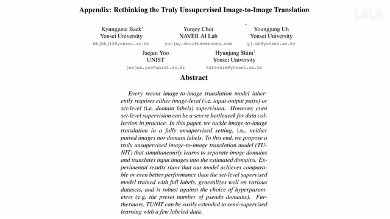
00:00:00–00:00:22 · 画面 001大家好啊,今天我们来快速数一篇论文 Rethinking the Truly Unsupervised Image-to-Image Translation 那这篇呢,你可以看到,又是一个 Unit 的后续那么 Unit 这个系列呢,从最开始的这个 Unit 到 Munit 然后呢,发展到这个 Few-Shot 这个 Funit 之后呢,就到了这篇这个 Tunit 我们继续来看这里作者提出了哪些改进
00:00:22–00:00:33 · 画面 002
00:00:22–00:00:33 · 画面 002首先这里为什么有一个 truly unsupervised 这里做着说过去的这个 unsupervised 其实并不彻底这个 unsupervised 不绝对就绝对不 unsupervised 那我们看到这里呢做着列出了几种 supervised 的等级那么最高级的最严格的这种一对一的对应的我们一般就是叫它这个 supervised 它呢就是一系列以 pix2pix 为代表的文章使用的这个数据那么当然这种数据集是很难找的那么如果我们稍微放宽一点
00:00:33–00:00:34 · 画面 003
00:00:33–00:00:34 · 画面 00300:00:34–00:01:26 · 画面 004
00:00:34–00:01:26 · 画面 004我们把它这个数据集化成不同的 domain 就是我只有 domain 的 label 但是没有这个 domain 之间的图像的相互对应的关系那么这个呢是我们之前介绍的这个 unit 它的这个系列使用了这个 label 或者叫 supervision 它其实也可以叫 unsupervised 但是如果严格来说呢你需要给每个图像规定说它是哪个 domain 的所以呢在本文作者认为这也算是一种 supervised 那 unit 呢强调的是一个一对一的对应而 MUnit 就可以强调多对多的对应了这是这两篇文章的区别那么本文呢作者说我们把这个 unsupervised 再进一步我直接就扔给你一堆这个图像然后呢我从里面选两张一张呢用来提供语义信息就是我们的 source image 另一张呢用来提供这个风格就是我希望它变成什么样的画风下面呢我们就来看作者具体的实现首先这一个网络的结构这个网络的结构呢基本上沿袭了这个 MUnit 的结构
00:01:26–00:01:27 · 画面 005
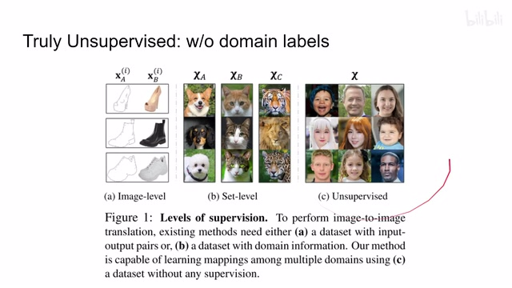
00:01:26–00:01:27 · 画面 00500:01:27–00:01:41 · 画面 006
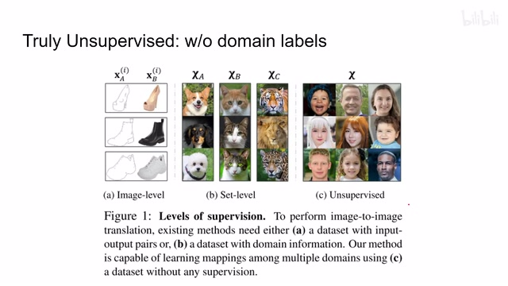
00:01:27–00:01:41 · 画面 00600:01:41–00:03:27 · 画面 007
00:01:41–00:03:27 · 画面 007从远处去看你知道这里有这个 encodergenerator 和 decoder 那更具体来说呢我们看到这个 encoder 这里呢作者叫 guiding network 因为你如果按照 Munit 的讲法它需要提供这个 domain invariance 这个 context 里面的这个信息也就是图像的语义的信息然后呢还要提供这个图像的这个 style 就是它的这个图像画风的这个信息就是 domain specific 那个东西所以呢这个 guiding network 也是它的输入呢是一张这个 reference image
它的输出呢包括两个一个是 domain labels 另一个呢是这个 style code 那更具体来说 domain label 呢就是一个 k 分类的问题它呢使用了我们之前刚刚介绍 IIC用来训练这 k 个类这 k 当然是我们人工指定的那这样子呢希望把我们这些所有的 unsupervised 整个一个大的数据集自己做一下这个聚类那么第二个头呢输出一个 style code 这个叫 MoCo head 为什么叫 moco 呢因为这个 head 呢他使用这个 moco 来训练的就是这个 contrastive learning 那些 loss 然后呢同时他还用了这个 ema 用了 memory bank 这些东西那 moco 之前我们也讲了感兴趣的朋友呢可以翻一翻我们相关的视频
那么这个呢是我们的 encoder network 那本质上它还是提供一个 semantic 一个 style 但是呢与这个 munit 相区别的是它的这个 semanticmunit 里面它是提供一个长的 feature 去描述这个 semantic 它是什么东西这里的输出呢你可以把它理解成是一个多分类的或者说聚类的概率了那么我们的 generator 就不再依赖于这个东西去做重建了这个是本文的 encoder 和这个 munit 最大的区别相应的 Generator 也要做调整 Generator 的输入一个是 SourceImage 我们要从哪里来然后 StyleCode 是我们的 Encoder 给的就是我们 TargetImage 里面解出来的 StyleCode 我们要变成什么样的画风那么它的输出就是 GeneratedImage
00:03:27–00:03:29 · 画面 008
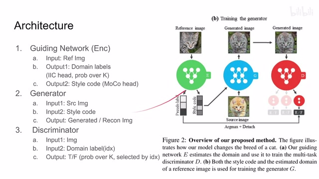
00:03:27–00:03:29 · 画面 00800:03:29–00:03:37 · 画面 009
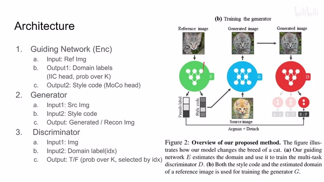
00:03:29–00:03:37 · 画面 009那当然呢，你也可以把我们这个 source image 送到这个 encoder 或者叫 guiding network 里面，把它的这个 style code 也解出来。这样子呢，你就可以做一个 reconstruction。那这个呢是 generator 最后呢，discriminatordiscriminator 呢也要修改一下，因为你像 unit m unit
00:03:37–00:03:38 · 画面 010
00:03:37–00:03:38 · 画面 01000:03:38–00:03:45 · 画面 011
00:03:38–00:03:45 · 画面 01100:03:45–00:03:46 · 画面 012
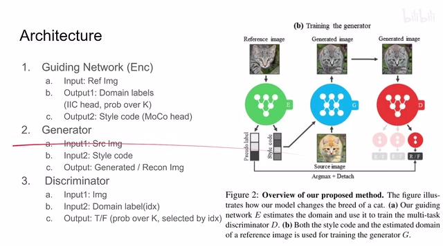
00:03:45–00:03:46 · 画面 01200:03:46–00:04:10 · 画面 013
00:03:46–00:04:10 · 画面 013我们其实有一个无形的 supervision，就是我们知道这个图像它们是来自同一个 domain。那么现在我们这个 domain 的信息也消失了，但是我们的 discriminator 依然还要 condition on 这个 domain，就是它依然要把这个 domain 的信息作为一个条件。所以这里它的输入一个是我们的需要鉴别的图像
00:04:10–00:04:11 · 画面 014
00:04:10–00:04:11 · 画面 01400:04:11–00:04:41 · 画面 015
00:04:11–00:04:41 · 画面 015另一个呢就是这个 domain label。那这个 domain label 呢，其实本质上是一个 index。那么这个 discriminator 呢，它其实也是输出 k 个这个概率，这个可以跟这里的这个 k 是一样的。就相当于针对每一种这个可能的这个聚类的中心，我都判断一下这张图的真假。那么实际真正用哪一个数值，真正用哪一个去计算 loss，那我根据这个 domain label 这个 index 去选出这一个值来作为我们这个 discriminator 这个打分那么以上呢，就是这三个网络部分针对真正的 unsupervised 的数据集他们做了哪些修改。那么下面呢，我们就要开始训练这个网络。那这里呢，训练这个网络分为三个阶段，还是 encoder 先训练，然后呢 discriminator，最后呢是 generator。但是呢，在训练 generator 的同时呢，你还会稍待着把这个 encoder 训练一遍。那么下面呢，我们就来逐步来看
00:04:41–00:04:47 · 画面 016
00:04:41–00:04:47 · 画面 01600:04:47–00:04:49 · 画面 017
00:04:47–00:04:49 · 画面 01700:04:49–00:05:13 · 画面 018
00:04:49–00:05:13 · 画面 018首先第一步是 guiding network 也是 encoder 它的训练这个训练我们之前也讲了它因为是有两个 head 那么一个 IIC 用来做聚类另一个用 moco 来去把 style code 给它做出来所以训练这个是在训练所有其他网络之前就是我采出来一提样本之后首先做的一个事情它是不包括在一般的 GAN 的训练里面的
00:05:13–00:05:14 · 画面 019
00:05:13–00:05:14 · 画面 01900:05:14–00:05:16 · 画面 020
00:05:14–00:05:16 · 画面 02000:05:16–00:05:21 · 画面 021
00:05:16–00:05:21 · 画面 02100:05:21–00:05:46 · 画面 022
00:05:21–00:05:46 · 画面 022然后呢我们开始训练 GAN 了这个再往下是 discriminatordiscriminator 很好做嘛就是一个真数据假数据的问题这里这个下标表示他训练哪一个 domain 他拿到我们这个 pseudo-label 决定了我们选了哪一个 domain 就是这个 domain label 然后这个 source image 就是我们的真实的图像同时呢这个 generator translated 出来的图像 translate 到这个 source image 他这个 domain 的这个图像呢是我们这个虚假的图像那这个呢是一个标准的 discriminator 的训练那么再往下呢我们来看到这个 generator
00:05:46–00:05:48 · 画面 023
00:05:46–00:05:48 · 画面 02300:05:48–00:05:54 · 画面 024
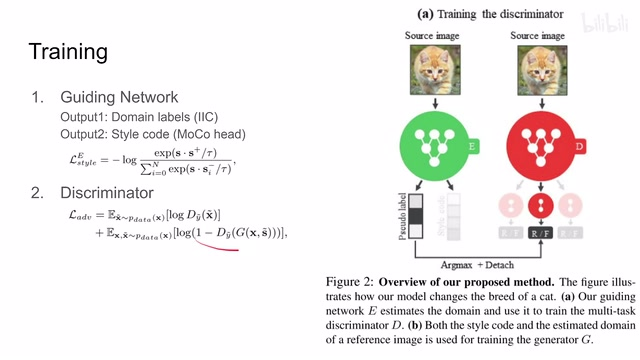
00:05:48–00:05:54 · 画面 02400:05:54–00:07:32 · 画面 025
00:05:54–00:07:32 · 画面 025这个 generator 的 loss 相对比较复杂，它一共有三个部分。首先还是来都来了对吧，我们先做个 reconstruction。但是我们知道看这个图，这个 reconstruction 需要这个 style code。它怎么解决呢，还是把我们的 source image 送到我们的这个 encoder 这个 guiding network 里面，把这个 style code 提出来，然后再做这个 reconstruction那当然注意这里呢，这个 style code 是从我们这 encoder 里出来的，它并没有切断 梯度的传递。所以说当你计算这个 reconstruction loss 时候呢，有一部分 loss 会最终顺着这个 style code 落回到我们这个 reference image 在这里就是这个 source image。它呢，在这个过程中呢，把我们的 encoder 也给训练了一下。那这个呢是 reconstruction loss
那当然跟这个 GAN loss 也是一样的，我们 discriminator 给出直来把这个 generator 训一下，同时呢，由于这个 style code 把我们这 encoder 也训练了一下，只不过这次呢，它的这个输入呢变成这个真正的 reference image，那最后呢还有一个 loss 叫做 style contrastive loss，它的这个流程呢跟我们这个 MUnit 里面的这个 latent reconstruction loss 流程是一样的，但是呢，正如名字所暗示的一样，MUnit 里面做的是这个 reconstruction，那这里呢用的是这个 contrastive
首先从流程来讲，我们先从这个 generator 生成我们这个 translated image，然后呢，把 translated image 送到我们的这个 encoder 里面，这个 encoder 再给我们提出一个 style code，那么经过这一圈提出来这个 style code 叫做 s prime，一开始这个 reference image 给我们的这个 style code 那叫做这个 s tilde那显然这样的东西应该尽量接近，同时呢，它要跟其他的这些图像的这个 style 有所区别，就是鼓励他们相互远离，所以这个地方这个 contrastive loss 比这个 reconstruction loss 更近一步，它不仅要求你这个 style code 你这个 latent code 要保持一致，同时呢，它还要维持一个多样性，就是不同样本之间你们的这个 style 不能靠太近
00:07:32–00:07:34 · 画面 026
00:07:32–00:07:34 · 画面 02600:07:34–00:07:47 · 画面 027
00:07:34–00:07:47 · 画面 027那么这个呢就是本文 train 这个 generator 的第三个 loss，那么这么一圈下来，我们总结一下，这个 discriminator 它最好弄啊就是一个 gan loss，那 generator 它的 loss 呢包括三个部分，一个是 gan loss，一个是这个 style contrastive，再就是这个 reconstruction，那么 encoder 它的情况最复杂，它呢首先继承了所有来自这个 generator 的 loss，因为这个 style code 的存在
00:07:47–00:07:48 · 画面 028
00:07:47–00:07:48 · 画面 02800:07:48–00:07:50 · 画面 029
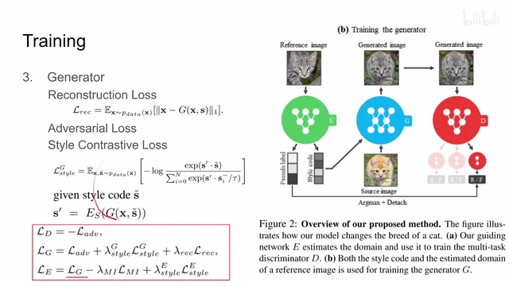
00:07:48–00:07:50 · 画面 02900:07:50–00:07:54 · 画面 030
00:07:50–00:07:54 · 画面 03000:07:54–00:08:00 · 画面 031
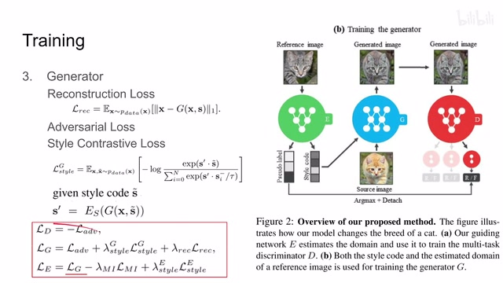
00:07:54–00:08:00 · 画面 03100:08:00–00:08:02 · 画面 032
00:08:00–00:08:02 · 画面 03200:08:02–00:08:03 · 画面 033
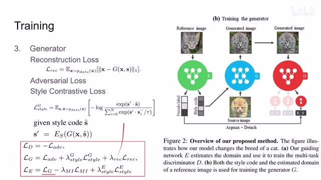
00:08:02–00:08:03 · 画面 03300:08:03–00:08:33 · 画面 034
00:08:03–00:08:33 · 画面 034那么同时呢，因为他有两个头对吧，一个是做这个 Mutual Information 的就是 IIC 那个头，一个呢是这个 Style Code 的这个 Contrastive Learning 的这个 Moco 这个头，那所以呢，他的 loss 呢写成这个样但实际在做这写代码的时候，当你 sample 出一个 batch 来之后呢，首先是做这两个头的这个 self-supervised learning，把这个 encoder 训一下，然后呢训的是 discriminator，最后呢训的是这个 generator，在训 generator 的同时呢，你也根据这个 loss 把这个 encoder 又给它训了一遍，那么这个呢就是本文的这个主要的技术流程，那下面我们就来看作者汇报的结果吧，首先是一些 ablation 啊，像这个 IIC 为什么有用
00:08:33–00:08:34 · 画面 035
00:08:33–00:08:34 · 画面 03500:08:34–00:08:40 · 画面 036
00:08:34–00:08:40 · 画面 03600:08:40–00:08:41 · 画面 037
00:08:40–00:08:41 · 画面 03700:08:41–00:08:45 · 画面 038
00:08:41–00:08:45 · 画面 03800:08:45–00:09:24 · 画面 039
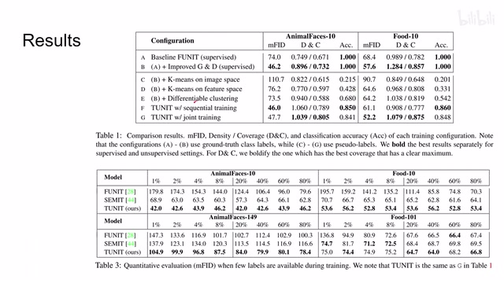
00:08:45–00:09:24 · 画面 039对比 FUnit，因为它还是需要一个 label，所以作者这里只改进了 Generator 和 Decoder，可以看到性能的提升，这里的评价指标两个数据集包括下游的任务这个 MFID 是 FID 的一个升级版，这里还有一个 Density 和 Coverage，那关于这两个 metric 感兴趣的朋友呢你可以看一眼他的引用提到了这两个 metric 是怎么提出的是两篇不同的文章，那么当然这边还有这个 label 比较少的情况下的这个对比，因为作者强调的就是 truly unsupervised 嘛，他就是完全不依赖任何 label 的这么一个东西，那么在这个文章附录的最后作者还画了一个很有意思的图，这个 LPIPS 和这个 FID 的对比
00:09:24–00:09:34 · 画面 040
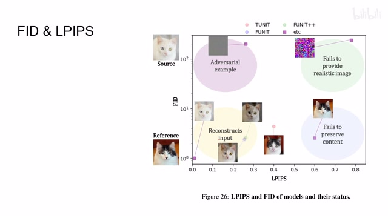
00:09:24–00:09:34 · 画面 040那感兴趣的朋友呢可以读一读他的文字的描述，当然看这个图呢你基本也明白了。那么总的来说呢，这篇文章就是把我们的这个 unsupervised 的等级更进一步，真正的就是扔一个数据集进来就结束了。它的核心的贡献呢在于针对这种 unsupervised 的情况下处理，unsupervised 的情况下它的 generator 和这个 discriminator 的一个改进。
00:09:34–00:09:42 · 画面 041
00:09:34–00:09:42 · 画面 04100:09:42–00:10:07 · 画面 042
00:09:42–00:10:07 · 画面 042当然这个 encoder 它还有一个意外发现，就是我们加了这个 moco head 之后能够提高这个 encoder 它的这个聚类的能力，在它的下游任务里面也有体现。感兴趣的朋友还是查看原文好了。那么以上就是我对这篇文章一个快速的整理，那么感谢您的收看，再见。
00:10:07–00:10:07 · 画面 043
00:10:07–00:10:07 · 画面 043转写与来源说明 · 0 个自动复核提示
保留 27 个原始语音片段，0 个片段触发自动复核提示。提示仅用于定位可能的术语、重复或识别问题，不等于已确认错误。
讲解画面为源视频截图（640×360），不是可编辑 PPT 文件。全片按每秒 2 帧扫描内容变化，逐步展开页保留；连续动画保留代表画面。清晰度受源视频限制。
原视频：paper/合集_2026-10-16_内容生成/[论文速览]Rethinking the Truly Unsupervised Image-to-Image Translation[2006.06500].mp4
SHA-256：f279ec6adc6ec1a0ace3a781696e820f91e84f3f822d3e120ffb7c945964e076
全文按视频语音与画面制作。原论文可从上方链接下载；完整资料包保留全文、原始逐字稿、字幕和校对记录。